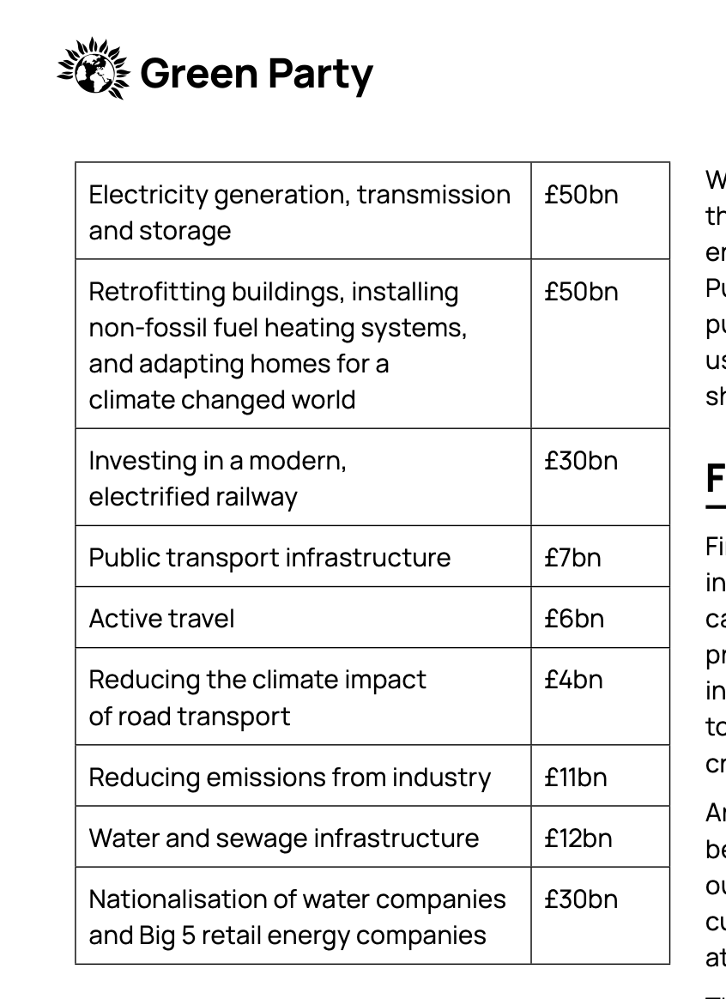
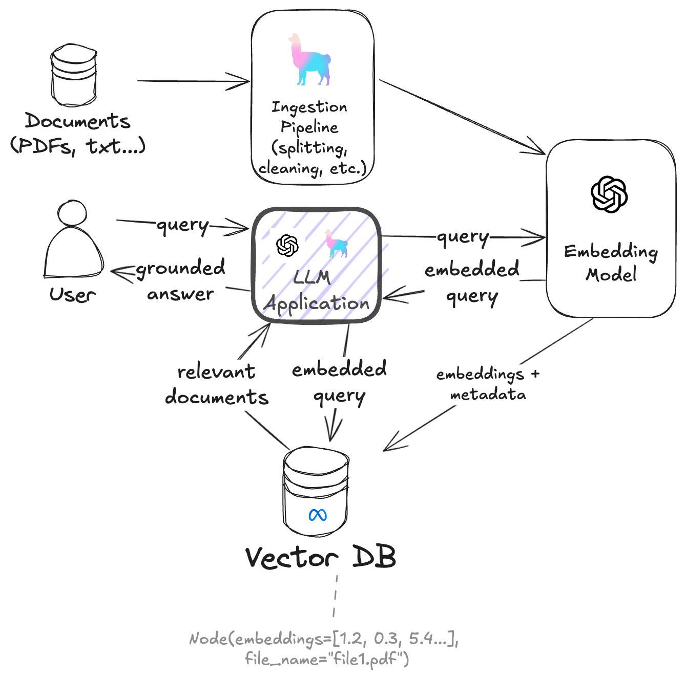

Build a RAG to Brag About
Natan Mish
GitHub repository: https://github.com/NatanMish/ragbrag_pycon_ie_24/

Agenda
- Introduction
- Tools
- Data
- What is RAG?
- Use Cases
- Architecture
- Build a simple RAG with Llamaindex and FAISS
- What are the limitations of the standard RAG?
- Methods for improving RAG
- Hypothetical Document Embedding (HyDE)
- Query Transformations
- Contextual Chunk Headers
- Evaluation
- Other methods
- Why not fine-tune?
- What have we covered?
- Q&A
About Me
Hello! I'm Natan Mish, a Machine Learning Engineer at Zimmer Biomet, where I work on developing and deploying machine learning models for medical devices. My academical background is in Data Science and Economics and have worked in various industries, including finance, telecommunications, and transportation.
I am a member of the scoping committee for DataKind UK, a charity that helps other charities use data science to improve their operations.
Python conferences are my favorite events, and I have spoken at PyData London, EuroPython and this is my first time at PyCon Ireland. I like to learn and explore new technologies and share my knowledge with others.
Scan to Connect

Tools
-
Jupyter Notebooks
-
Llamaindex
- Alternatively: LangChain, Haystack
-
FAISS
- Alternatively: Qdrant, Pinecone, Chroma
-
Deepeval
- Alternatively: ML Flow, LangSmith
UK General Elections 2024 Manifestos


Parsing is a pain
Files can be stored in different formats, such as PDF, Word, HTML, and plain text. Some context is inferred from the structure of the document, such as headings, bullet points, and tables. The text can be extracted using OCR, but the structure might be lost.
We will demonstrate some tools that can overcome these challenges and help you build a RAG to Brag About.

Everyones talking about RAG
Is it though? I'll let you decide
Retrieval Augmented Generation
RAG is an AI framework that combines the strengths of traditional information retrieval systems (such as search and databases) with the capabilities of generative large language models (LLMs). By combining your data and world knowledge with LLM language skills, grounded generation is more accurate, up-to-date, and relevant to your specific needs.
Use Cases
-
Medical
Using patient medical history and current symptoms to generate a diagnosis
-
Legal
Using legal documents and case law to generate a legal brief
-
Finance
Using financial data, market trends, profit and loss statements to generate portfolio recommendations
-
Education
Using student data, curriculum, and learning outcomes to generate personalized learning plans
Architecture
Time to get our hands dirty

Configuration
from llama_index.core import Settings
EMBED_DIMENSION = 512
# Load environment variables from a .env file
load_dotenv()
# Set embedding model on LlamaIndex global settings
Settings.embed_model = OpenAIEmbedding(
model="text-embedding-3-small",
dimensions=EMBED_DIMENSION
)
Read in the documents
from llama_index.core import SimpleDirectoryReader
path = "../data/"
node_parser = SimpleDirectoryReader(
input_dir=path,
required_exts=['.txt', '.pdf']
)
documents = node_parser.load_data()
print(documents[0])
Doc ID: 71419e08-91cf-4966-a1d6-7e6a5fb8b20f
Text: Promoted by SNP 3 Jacksons Entry EH8 8PJ. Printed by Saltire 60
Brook Street G40 2AB.“A FUTURE MADE IN SCOTLAND.” VOTE SNP FOR
SCOTLAND
Text Cleaning
from llama_index.core.schema import BaseNode, TransformComponent
class TextCleaner(TransformComponent):
def __call__(self, nodes, **kwargs) -> List[BaseNode]:
for node in nodes:
# Replace tabs with spaces
node.text = node.text.replace('\t', ' ')
# Replace paragraph separator with spaces
node.text = node.text.replace(' \n', ' ')
return nodes
Create Vector Store and Query Engine
from llama_index.vector_stores.faiss import FaissVectorStore
from llama_index.core.text_splitter import SentenceSplitter
from llama_index.core.ingestion import IngestionPipeline
EMBED_DIMENSION = 512
CHUNK_SIZE = 250
CHUNK_OVERLAP = 25
faiss_index = faiss.IndexFlatL2(EMBED_DIMENSION)
vector_store = FaissVectorStore(faiss_index=faiss_index)
text_splitter = SentenceSplitter(
chunk_size=CHUNK_SIZE,
chunk_overlap=CHUNK_OVERLAP
)
pipeline = IngestionPipeline(
transformations=[
TextCleaner(),
text_splitter,
],
vector_store=vector_store,
)
nodes = pipeline.run(documents=documents)
vector_store_index = VectorStoreIndex(nodes)
query_engine = vector_store_index.as_query_engine(similarity_top_k=2)
Submit a Query
test_query = "What is the SNP's policy on climate change?"
results = query_engine.query(test_query)
print(results)
The SNP's policy on climate change includes banning new coal
licenses, ensuring fair funding for climate initiatives,
establishing a Four Nations Climate Response Group to meet
net-zero targets, devolving powers for a bespoke migration
system, mitigating the harm of Brexit on productivity,
providing sustainable funding for farming, and giving
Scotland its rightful share of marine funding.
Limitations of the standard RAG
- Inaccurate or Irrelevant Results
- Missing Critical Information: Essential documents containing the answer may not be included in the top retrieval results
- Incorrect Specificity: Responses may lack precision or fail to address the specific context of the query
- Domain Adaptability
- Making the RAG model work well for multiple different domains is a challenge
- Scalability
- As the number of documents increases, the retrieval time increases
- Underlying LLM models might have limited availability
How can we improve our RAG?

Hypothetical Document Embedding (HyDE)
HyDE aims to improve document retrieval by generating a hypothetical document based on the user's query. This approach is designed to bridge the gap between short, potentially imperfect user queries and longer, well-written documents containing the relevant information
How HyDE Works
- Query Transformation: When a user submits a query, HyDE uses a language model (like GPT-3) to generate a hypothetical document that represents an ideal answer to the query.
- Embedding Generation: This hypothetical document is then converted into an embedding vector using a pre-trained embedding model.
- Similarity Search: The system searches for real documents in the corpus that are most similar to the encoded hypothetical document, rather than directly matching the original query.

from llama_index.embeddings.openai import OpenAIEmbedding
from llama_index.core.query_pipeline import QueryPipeline
from llama_index.core import PromptTemplate
from llama_index.llms.openai import OpenAI
class HyDERetriever:
def __init__(
self,
chunk_size=250,
chunk_overlap=50,
retriever=None
):
self.llm = OpenAI(
temperature=0,
model_name="gpt-4o",
max_tokens=4000
)
self.embeddings = Settings.embed_model
self.chunk_size = chunk_size
self.chunk_overlap = chunk_overlap
self.vectore_store_retriever = retriever
self.hyde_prompt = PromptTemplate(
"""Given the question '{query}', generate a
hypothetical document that directly answers this
question. The document should be detailed and
in-depth.the document size has be exactly
{chunk_size} characters.""",
)
self.hyde_chain = QueryPipeline(
chain=[self.hyde_prompt, self.llm],
verbose=True
)
def generate_hypothetical_document(self, query):
return self.hyde_chain.run(
query=query,
chunk_size=self.chunk_size
)
def retrieve(self, query):
hypothetical_doc = self.generate_hypothetical_document(
query
)
similar_docs = self.vectore_store_retriever.retrieve(
query
)
return similar_docs, hypothetical_doc
retriever = vector_store_index.as_retriever(similarity_top_k=2)
hyde_retriever = HyDERetriever(
chunk_size=250,
chunk_overlap=50,
retriever=retriever
)
results, hypothetical_doc = hyde_retriever.retrieve(test_query)
print(results)
print(hypothetical_doc)
'DECISIONS MADE IN SCOTLAND, FOR SCOTLAND. 21SNP General Election Manifesto 2024
Ban new coal licences. Follow the SNP Scottish Government’s lead and commit to no support for new coal mines, which would undermine our action to reach net zero.
Provide fair funding for climate. Scotland has over two thirds of the UK’s peatland, and currently plants over 60% of trees in the UK, yet funds restoration and planting within our budget, with no help from the UK Government. Westminster must ensure fair funding flows to devolved nations to enable our, and their, climate ambition given that for the whole of the UK to reach net zero by 2050, Scotland must do so by 2045.
Establish a Four Nations Climate Response Group to agree climate plans across the UK that deliver on our net-zero targets and ensure the UK Government stops backtracking on climate ambition.
Devolve powers to create a bespoke migration system for Scotland that values those who decide to work, live, study and invest here and allows us to address our specific demographic and economic needs. Introduce a rural visa pilot scheme. Scotland should have full powers over immigration, including the devolution of overseas workers’ employment visas. Until then, it is vital the UK Government acknowledges the distinct demographic challenges we face in Scotland and introduce a pilot to mitigate against labour shortages as a result of a hard Brexit and hostile immigration policies.
Mitigate the harm of Brexit on productivity by reviewing immigration rules and expanding shortage occupation lists, so businesses have access to the workforce they need. Provide sustainable funding for farming. Despite numerous requests, Scotland has had no commitment from Westminster on any future funding for farming after 2025. The UK Government must increase funding for farming – to at least pre-Brexit levels - and provide certainty through multi-annual funding frameworks. Agree a veterinary agreement with the EU to ease exports and imports.
Give Scotland our rightful share of marine funding'
'20BUILDING A FAIRER, GREENER ECONOMY Under the SNP, Scotland’s economy is already one of the best performing parts of the UK with both GDP per head and productivity growing faster in Scotland than the UK as a whole. But we want to go further. Our commitment to tackling the twin crises of climate change and nature loss is unwavering and we believe emissions reduction and economic prosperity go hand in hand. We want to share in the enormous economic opportunities of the global transition to net zero. SNP MPs will demand the UK Government:
Bring forward an immediate emergency budget following the election to reverse cuts to public spending and deliver meaningful investment in economic growth, including green energy.
Work at pace with the Acorn Project and Scottish Cluster to secure the fastest possible deployment following the UK Government’s failure to support the Acorn carbon capture, utilisation and storage project at track 1. Urgent clarity is required to restore investor confidence, boost economic opportunities and make progress against our net zero obligations. Modernise the Contracts for Difference scheme to enable the stable deployment of Scotland’s renewable energy pipeline.
Take an evidence-based approach to oil and gas. The UK Government is the decision-maker on new oil and gas licences. We believe any further extraction must be consistent with our climate obligations and take due account of energy security considerations. Decisions must be made on a rigorously evidence-led, case-by-case basis, through a robust climate compatibility assessment.Support the North East and the Just Transition. North Sea oil and gas is naturally declining, and as the transition to new industries gathers pace, we are clear that the workers, families and people of that industry and the North East must not be abandoned. We are supporting them with the £500 million North-East Transition Fund - a fund the UK Government must now at least match. Deliver a sustainable future for Grangemouth.
The future of the Grangemouth complex must be secured and a just transition delivered for the workforce. The UK Government must recognise the importance of the whole site to Scotland’s economy and communities and must invest in a sustainable future.'
"The SNP's policy on climate change is centered around the goal of achieving net-zero greenhouse gas emissions by 2045. This ambitious target is in line with the recommendations of the Intergovernmental Panel on Climate Change (IPCC) to limit global warming to 1.5 degrees Celsius above pre-industrial levels. To achieve this target, the SNP has outlined a comprehensive plan that includes a range of measures to reduce emissions across all sectors of the economy.
One key aspect of the SNP's climate change policy is the promotion of renewable energy sources. The party has committed to increasing the share of renewable energy in Scotland's electricity mix to 100% by 2030. This will involve investing in wind, solar, and hydroelectric power, as well as supporting the development of new technologies such as tidal and wave energy. The SNP also aims to phase out the use of fossil fuels for electricity generation, with a particular focus on closing coal-fired power stations.
In addition to promoting renewable energy, the SNP is also committed to improving energy efficiency in homes and buildings. The party has set a target to upgrade all homes in Scotland to at least an Energy Performance Certificate (EPC) rating of C by 2030. This will involve providing financial support for energy efficiency measures such as insulation, double glazing, and efficient heating systems. The SNP also plans to introduce regulations to ensure that all new buildings meet high energy efficiency standards.
The SNP's climate change policy also includes measures to reduce emissions from transport, industry, and agriculture. The party has pledged to invest in public transport infrastructure, promote the use of electric vehicles, and support the development of low-carbon technologies in industry. The SNP also aims to promote sustainable farming practices and reduce emissions from agriculture through measures such as tree planting and peatland restoration.
Overall, the SNP's policy on climate change is ambitious and comprehensive, with a strong focus on reducing emissions across all sectors of the economy. By setting a target of achieving net-zero emissions by 2045, the SNP is demonstrating its commitment to tackling climate change and protecting the environment for future generations."